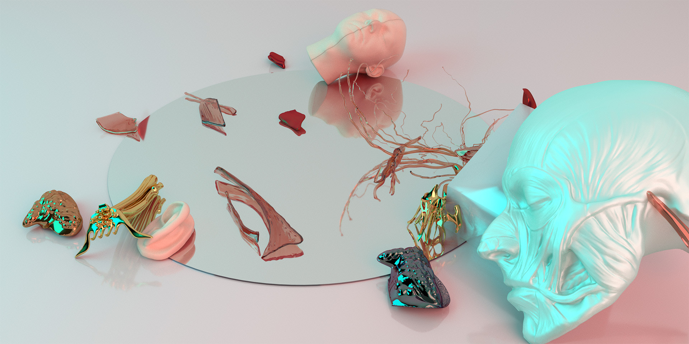
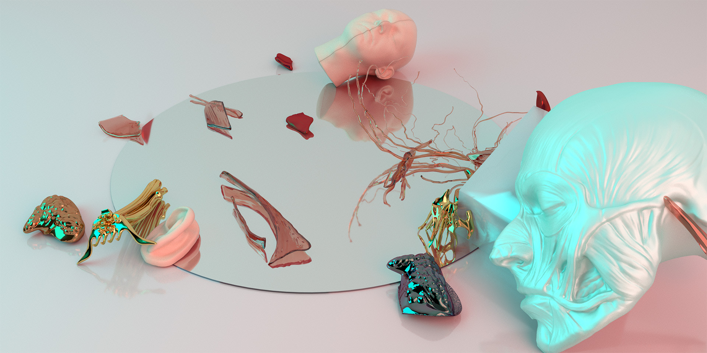

×
Our bodies operate intelligently and unconsciously—we rarely notice their complexity until something goes wrong. We take it for granted that the body will follow the brain's commands, which often leads us to neglect our health. The skin, while beautifully designed to protect our internal organs, also conceals them, further distancing us from an awareness of the body's inner workings.
For people with disabilities, assistive devices like glasses, hearing aids, and braces make the body's needs more visible. This visibility is where my design begins.
The concept originated from sculptural studies using Q-tip models and evolved through a visual language developed from my renderings. The jewelry collection consists of three pieces—Homer, Pharaoh, and Lucia—which function as decorative exoskeletons. Looking ahead, these pieces could serve not only as adornment but as platforms for wearable devices that monitor the body's internal systems.


 
